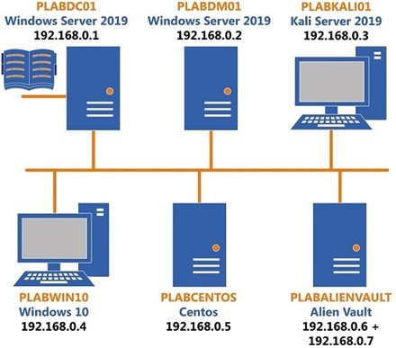

Introduction
9beca326-b493-4b0e-b3dc-d7dfb77df3c9
Welcome to the Vulnerability Identification and Remediation Practice Lab. In this module, you will be provided with the instructions and devices needed to develop your hands-on skills.
dc640c20-9434-45ea-b7c2-6d4d6a196bfc
Learning Outcomes
In this module, you will complete the following exercises:
- Exercise 1 - Vulnerability Identification
- Exercise 2 - Validation
- Exercise 3 - Remediation/Mitigation
- Exercise 4 - Inhibitors to Remediation
- Exercise 5 - Patching
After completing this module, you will be able to:
- Install Updates Manually
- Enable Automatic Updates
After completing this module, you will have further knowledge of:
- Asset Criticality
- Active vs. Passive Scanning
- Mapping/Enumeration
- True Positives and False Positives
- True Negatives and False Negatives
- Configuration Baselines
- Hardening
- Compensating Controls
- Risk Acceptance
- Memorandum of Understandings (MOU)
- Service-level Agreements (SLA)
- Organizational Governance
- Business Process Interruption
- Degrading Functionality
- Legacy Systems
- Proprietary Systems
Exam Objectives
The following exam objectives are covered in this lab:
- 1.3 Given a Scenario, Perform Vulnerability Management Activities
Note: Our main
focus is to cover the practical, hands-on aspects of the exam
objectives. We recommend referring to course material or a search engine
to research theoretical topics in more detail.
Lab Duration
It will take approximately 1 hour to complete this lab.
1b317064-7b0c-48e0-845c-05a2d99e80c5
Help and Support
For more information on using Practice Labs, please see our Help and Support page. You can also raise a technical support ticket from this page.
Click Next to view the Lab topology used in this module.
d2c53300-f951-45a9-9aa4-3d4ecae69e11
Lab Topology
During your session, you will have access to the following lab configuration.

Depending on the exercises, you may or may not use all
of the devices, but they are shown here in the layout to get an overall
understanding of the topology of the lab.
- PLABDC01 - (Windows Server 2019 - Domain Server)
- PLABDM01 - (Windows Server 2019 - Domain Member)
- PLABKALI01 - (Kali Linux 2019 - Linux Kali)
- PLABWIN10 - (Windows 10 - Domain Member Workstation)
- PLABCENTOS - (Centos 8 Linux - Stand-alone Linux Server)
- PLABALIENVAULT - (Alien Vault Linux Security Management Platform)
Click Next to proceed to the first exercise.
<
Home |
README |
Vulnerability Management >
CompTIA Cybersecurity Analyst (CySA+) Practice Labs
Exercise 1 - Vulnerability Identification
Vulnerabilities can lead to a system compromise or even
attack of several types of malware. You should ensure that you can
close the vulnerabilities that exist within a system or even a network.
However, before you close the vulnerabilities, you must be able to find
them and identify them correctly.
There will be instances when you will run a
vulnerability scanner, but the identified vulnerabilities will not
exist. You should be able to manually verify the vulnerabilities and
ensure that the scanner results are inspected and reviewed closely.
In this exercise, you will learn about vulnerabilities identification.
Learning Outcomes
After completing this exercise, you will have a further understanding of:
- Asset Criticality
- Active vs. Passive Scanning
- Mapping/Enumeration
Your Devices
This exercise contains supporting materials for CySA+.

Asset Criticality
An asset for an organization is something that has a
value, which depends on the type of asset. There can be an asset, which
can have a little value, and then there can also be an asset that has
high value. For example, a chair and a database both are assets for the
organization. However, a chair will have little value as compared to a
database, which holds hundreds of Gigabytes of customer information.
The assets can be broadly categorized as:
- Information Assets: An organization can
collect, categorize, and store information in different ways. For
example, information can be stored within databases and files.
- Software Assets: Software is defined as a piece
of code that is written to achieve a specific output. For example,
Microsoft Word is also a piece of code that is meant to create and
modify documents. An organization can have different types of software
assets, such as application and system software.
- Physical Assets: No organization can run
without physical assets. These are in different shapes and forms, and
the nature of each physical asset may differ. You could have computers,
communication equipment, storage devices, electrical devices, furniture,
and even the facility or the building as a physical asset.
- Service Assets: There will be different forms
of services that would be running within the organization. An example of
service can be communication services, such as voice communication or
the telephone. Internet services being used by the organization is
another form of service. There can also be computing services, which can
either be developed in-house or outsourced from a third-party.
Asset Inventories
In an organization, assets can be collected and
organized in asset inventories, which are created as part of the Asset
Management process. Each asset within the inventory will have a value,
which can either be low or high, depending on its criticality. Each
asset within the asset inventory has a cost attached, which is
calculated using the Risk Management process.
With the help of asset inventories, an organization can
track its assets, including the assets that are high value. You can
also identify the importance of an asset using the inventory.
With the use of asset inventory, you can track important details about the assets:
- Identification
- Acquisition date
- Security classification
- The location where the asset is placed
- Back and restore (if in the form of data or information)
- Owner or custodian
- Criticality level
With the help of the criticality level of the asset,
you can put in proper measures for its protection. For example, if it is
a server holding critical business data, you would want to not only put
in enough security controls, but you would also want to plan for its
maintenance and that there is a backup and restore process that is put
in place.
Asset inventories must be reviewed periodically. This
is important because the criticality of the asset can change over a
period. It could also be possible that new assets are added to the asset
inventory. However, without the periodic review, you may not be able to
assign the correct level of criticality to these assets.
Most importantly, the criticality of an asset is
directly relative to the high-cost risk that may arise if the asset
fails. If it is an asset that has high value for the organization, then
its criticality needs to be higher.
Active vs. Passive Scanning
Active scanning is a critical task that must be
performed when measuring the security of systems within a network.
During active scanning, you need to send traffic to the systems on the
network and gather various types of information, such as:
- Device names
- IP addresses
- Installed software
- Firmware versions
- Patches
- Operating system versions
In the active scanning, broadcast traffic is sent to
the target systems, and then the information is collected. However,
active scans can be detected by the target systems. If there are too
many requested being sent in active scanning, these requests can also
cause performance issues with the target systems.
Passive scanning, on the other hand, does not send
direct traffic to the target systems. Rather, it analyses the network
traffic and then identifies the targets. As compared to the active
monitoring, there is no additional traffic generated in passive
scanning, and therefore, the target systems do not suffer from
performance issues.
On the other hand, passive scanning is dependent on
the type of network traffic that is generated. If a few systems on the
network do not generate any kind of traffic, then they are not included
in the network traffic and, therefore, cannot be scanned in the passive
scanning.
Enumeration
Enumeration allows you to establish an active
connection with a target. Your intent is to extract different types of
information from the target. Some of the information that you can
extract is:
- Usernames
- Group names
- Hostnames
- Network shares and services
- Routing tables
- Web application
- Web servers
- SNMP information
- DNS information
Various types of enumerations can be performed. Some of these are:
- Windows Enumeration
- Linux Enumeration
- NetBIOS Enumeration
- SNMP Enumeration
- LDAP Enumeration
- NTP Enumeration
- SMTP Enumeration
- DNS Enumeration
dc2a295a-ab17-4b52-8e1c-80389d10a470
<
Home |
README |
Vulnerability Management >
CompTIA Cybersecurity Analyst (CySA+) Practice Labs
Exercise 2 - Validation
A vulnerability scanner will run through the
designated environment and try to locate open ports, running servers,
and vulnerabilities within the applications or the operating systems.
Vulnerability scanners have tests that are pre-defined or can be defined
based on which the vulnerabilities are detected.
However, the vulnerability scanner may provide
accurate or inaccurate results. It might detect a vulnerability that is
not one and may even miss a vulnerability even though it does exist
within the system or the application.
It is important to note that once the vulnerabilities
are discovered, they should also be verified and investigated for
further actions.
In this exercise, you will learn about the types of vulnerabilities.
Learning Outcomes
After completing this exercise, you will have further knowledge of:
- True Positives
- False Positives
- True Negatives
- False Negatives
Your Devices
This exercise contains supporting materials for CySA+.

True Positive
When a vulnerability scanner runs, it identifies a
vulnerability. After verification and further investigation, you
discover that it is a legitimate vulnerability that has been located.
Once you verify the vulnerability, you must close it depending on its
criticality and severity.
False Positive
There will be instances in which you run the
vulnerability scanner, which generates a list of several
vulnerabilities. After you investigate, you find out that a few of the
vulnerabilities do not exist. For example, a vulnerability might be
related to a missing patch. When you investigate, you find that the
missing patch is not required because its related application does not
exist on the system.
True Negative
The vulnerability scanner does not identify a
vulnerability within the system or application, and in reality, there is
not a vulnerability. For example, the vulnerability scanner has not
identified a single vulnerability. After manual verification and
investigation, you also are not able to identify a vulnerability. In
both cases, the result is shown as a health system and application.
False Negative
Consider a scenario in which you run a vulnerability
scanner, and it may only list a few vulnerabilities within the system.
Then, you test the operating system and applications with a second
vulnerability scanner and find that there are several new
vulnerabilities, which were missed by the first vulnerability scanner.
Missed vulnerabilities can be considered False Negatives. These are
vulnerabilities that do exist within the system or applications, but
they have been missed by the vulnerability scanner.
dc2a295a-ab17-4b52-8e1c-80389d10a470
<
Home |
README |
Vulnerability Management >
CompTIA Cybersecurity Analyst (CySA+) Practice Labs
Exercise 3 - Remediation / Mitigation
Over the last few years, cloud computing has become
increasingly popular. Many organizations have moved from on-premises
infrastructure to cloud infrastructure.
Just like local infrastructure, cloud infrastructure has its own set of vulnerabilities and potential threats.
In this exercise, you will learn about the types of cloud deployment models and their vulnerabilities.
Learning Outcomes
After completing this exercise, you have further knowledge of:
- Configuration Baselines
- Hardening
- Compensating Controls
- Risk Acceptance
Your Devices
This exercise contains supporting materials for CySA+.

Configuration Baselines
When configuring a system, you can configure it with
specific settings according to the machine’s role on the network. Based
on the role, certain features or applications may not be required. You
will turn off the specific services on the system and configure the
system with specific features, which are documented with date and time.
This is what is known as the configuration baseline.
For example, you will not require Windows Media Player
on a File server or a domain controller. You would simply remove this
feature. When configuring the configuration baseline, you change the
default settings and configure it based on a documented configuration.
For example, you would remove unnecessary services, applications, and
even the protocols. The key focus is to create a baseline and implement
it on all systems that have the same role. You would have a
configuration baseline for desktops, another one for laptops, and
similarly, you would have baselines for servers, such as:
- Webserver
- File Server
- Print Server
- Database Server
- Domain Controller
When an organization uses the configuration baseline
process, no system is installed without proper baseline configuration. A
specific image would be deployed on the system or server, depending on
the role it plays.
Hardening
Hardening is a process of reducing an attack surface
on a system or application. While in the process of application
hardening, you can perform various activities, such as patching the
application, removing unused features, and closing vulnerabilities. You
can also deploy certain security controls, such as a Web Application
Firewall (WAF) or Transport Layer Security (TLS), if you are using a Web
application.
During host hardening, you can perform various steps. Some of these steps are:
- Removing unnecessary or unused applications.
- Disabling unnecessary services
- Blocking the unrequired ports
- Preventing the use of external media, such as USB drives
- Implementing Mandatory Access Control (MAC)
- Implementing patching on regular and need-basis
This is not an exhaustive list, but some of the key
points. Other than this, you can also strengthen the security using
Group Policy if it is a Windows system and is part of a domain.
Several tools are available that can be used for
testing of OS security although tools may differ from operating system
to operating system. For example, even though discontinued, Microsoft
Baseline Security Analyzer (MBSA) used to be a good tool for testing the
security of a Windows platform.
- National Institute of Standards and Technology (NIST) standards SP800 series
- Control Objectives for Information and Related Technology (COBIT)
- Computer Information Systems (CIS) benchmarks
- National Security Agency (NSA)
Compensating Controls
Compensating controls are implemented for various
reasons. They are typically the controls implemented because the primary
controls are difficult / too expensive to implement. If the primary
controls fail, then the compensating controls are activated. The intent
of the compensating controls is similar to primary controls. They are
designed and implemented to reduce the risk by providing an additional
level of security.
Examples of compensatory controls are:
- Logs: You should maintain and review these logs regularly
- Audit trails: An audit trail should be implemented for the events taking place within the system or network
- Intrusion Detection System (IDS): If it is not possible to prevent the attack, then you should be able to at least detect it
In a scenario where a primary control is either
difficult or impossible to implement, you can implement compensating
controls. You may have to implement more than one compensating control
to meet the requirements of the primary control. When selecting a
compensating control, you should be cautious enough to verify that the
level of security that it provides should be equivalent to the primary
control, which could not be implemented.
With the compensating control, you should remember a few points:
- It is also important that the cost of the compensating control should be less than the cost of assets that it is protecting.
- Its implementation should not take more time than the primary control.
- It should be implemented to reduce the risk of the asset.
- It should be implemented as a substitute for the
primary control, which can be implemented, then you should avoid using
compensating control.
Risk Acceptance
In an organization, you have to first assess risks to
the assets. Once assessed, then you need to ensure that you have put in
security controls or countermeasures to protect them. You will have to
evaluate the risks, and accordingly, you need to treat the risks. You
can use different methods in treating the risks. Primarily, there are
four methods that you can use. Risk Acceptance is one method of treating
risks to assets within the organization.
Risk Acceptance is a risk treatment method in which an
organization chooses to accept the risk and takes no further action.
One of the reasons for this is that the cost of countermeasures is high.
The loss that may occur due to the risk is lower than the cost of
implementing the countermeasure.
For example, the cost of the risk is about $1000.
However, the cost of implementing the countermeasure is about $10,000.
Therefore, the organization is willing to accept the risk.
Other than Risk Acceptance, there are three more risk treatment methods. These are:
- Risk Reduction: When using the Risk Reduction
method, the organization not only manages the risks but also implements
the countermeasures to reduce the likelihood of risk occurrence.
- Risk Transfer: In this method, the risk is
simply transferred to a third-party. For example, you may outsource the
server management service to a third-party vendor who will be
responsible for managing the servers, performing backups, and also
restoration as and when required.
- Risk Avoidance: Using this method, the organization simply eliminate the services or activities that can lead to unnecessary risks.
dc2a295a-ab17-4b52-8e1c-80389d10a470
<
Home |
README |
Vulnerability Management >
CompTIA Cybersecurity Analyst (CySA+) Practice Labs
Exercise 4 - Inhibitors to Remediation
Over the last few years, cloud computing has become
increasingly popular. Many organizations have moved from on-premises
infrastructure to cloud infrastructure.
Just like local infrastructure, cloud infrastructure has its own set of vulnerabilities and potential threats.
In this exercise, you will learn about the types of cloud deployment models and their vulnerabilities.
Learning Outcomes
After completing this exercise, you will have further knowledge of:
- Memorandum of Understandings (MOU)
- Service-level Agreements (SLA)
- Organizational Governance
- Business Process Interruption
- Degrading Functionality
- Legacy Systems
- Proprietary Systems
Your Devices
This exercise contains supporting materials for CySA+.

Memorandum of understanding (MOU)
MoU lists the objectives of an agreement between two parties. An MoU is supported by the Interconnection Security Agreement (ISA). An MoU does not enforce any penalties and lists the objectives of the agreement between two parties. MoU focuses on the terms and conditions between the two parties. Even though MoU does not have any legal binding, but it does outline the objectives of two parties working together.
Some of the key components of MoU are:
- Names of the parties
- Scope of the engagement between two parties
- Roles and responsibilities of the parties involved
MoU defines the agreement expectations between two parties. In most cases, MoU is between two parties. However, it can also be possible that there is a tri-party MoU in which there are three parties involved.
Service-level Agreement (SLA)
There are typically two parties in an SLA, the organization and the vendor. An SLA is an agreement between both parties. The SLA defines
the expectations that an organization requires the vendor to meet. It
clearly defines the action plan, how it will be executed, timeline, and
penalties for failure. An SLA document clearly defines the following:
- an action plan
- how it will be executed
- timelines
- penalties for failure
The nature of an SLA will differ with the type of vendor. For example, an SLA document
with a software developer will be different from the hardware vendor,
who is responsible for maintaining the server and desktop hardware.
Organizational Governance
Organizational governance defines the processes that
will be used for managing and controlling processes and operations that
are running within an organization. Organizational governance is also
used by organizations to meet their business objectives.
An organization without organizational governance is
headless and works blindly without knowing what to achieve. The role of
organizational governance is to ensure that some processes and
procedures provide insights as to how the operations are running. It
helps the organization’s senior management gain insights into the
day-to-day operational processes.
In many cases, organizational governance is also a
requirement imposed by regulatory requirements (a security policy is an
example). A security policy within an organization focuses on the
people, systems, and data to bring governance in place. When there are
routine audits and compliance checks, you can find the gaps within the
security policy implementation. Security policy intends to drive
organizational governance in the IT domain.
Business Process Interruption
There will be certain vulnerabilities that will exist
within an IT environment in your organization. You need to plan for the
mitigation of these vulnerabilities. However, when implementing
mitigations, you need to ensure that you do not disrupt any business
operations or running processes.
Disrupting the business processes and operations can
be quite chaotic as they can bring the business operations to a halt.
Therefore, mitigations should be planned to proceed out of business
hours so that there are minimal disruptions.
Degrading Functionality
There can be a possibility that a solution you
implement may cause more damage than rectify. Some solutions may also
degrade existing functionality. For example, if a network interface card
(NIC) of one of the servers has gone bad and you replace it with
an older one. This will degrade the network speed for the system.
Whereas the original may have been 1 Gbps NIC, and you have changed it
to 100 Mbps.
For a desktop, it may not matter to that extent, but
think if this was done with a Webserver. It would cause slowness in
responding to the queries that are generated through the Web application
it is hosting. Therefore, while implementing a solution, you need to be
cautious about degrading functionality.
Legacy Systems
Legacy systems are systems that are outdated as per
the current technology standards. Legacy systems do not use the current
architecture or the system design in comparison to what is in use at
present. For example, Windows 7 was one of the key operating systems
from Microsoft. However, with the current operating system, Windows 10,
it became obsolete because Windows 10 adopted the new interface, new
architecture, and had better functionality and security. Therefore,
Windows 7 is now considered to be a legacy operating system.
Similarly, if you refer to an old system, Pentium, it
is obsolete because the current systems use new processors and memory
modules. The new processors are using i3, i5, or i7 processors with the
DDR4 memory modules. None of these are supported by a Pentium system.
Even though obsolete systems do not support the new
architecture and technology, they are often still used. This is because
you or your organization may be running an application on a server that
uses obsolete hardware. You do not want to move the application from
this server, and therefore, you are forced to use the legacy server.
Similarly, you may also be using the legacy application. It could be
because the data in the legacy system cannot be exported to the new
application, or you simply do not have a new application that provides
the same features or functionality.
It is also true that the legacy systems cannot
sometimes be used with new regulations or compliance standards. This is
because they do not provide or support the same level of security that
is required by the new regulations or standards.
Proprietary Systems
Proprietary systems often use specific data formats,
which cannot be easily integrated with the other systems. For example,
Windows is a proprietary operating system by Microsoft, who maintains
the permissions and privileges of adding and removing features as and
when required.
One of the key advantages of a proprietary system is
that it is designed to meet a specific purpose and provides a better
user experience. With proprietary systems, some regular updates or
upgrades are released by the organization that owns the product.
A proprietary system can be hardware or software. An
example of hardware can be the Core i5 processor by Intel. Windows is an
example of a proprietary operating system. The drawback of a
proprietary system can be that it would either have an upfront cost,
which means that you purchase and pay the cost. Another can be that you
have a subscription fee to use it. Then, there are typically maintenance
or service charges.
dc2a295a-ab17-4b52-8e1c-80389d10a470
<
Home |
README |
Vulnerability Management >
CompTIA Cybersecurity Analyst (CySA+) Practice Labs
Exercise 5 - Patching
Patching the system requires the system to be updated
from time to time with the latest version of packages. Updates can be
deployed in two different ways:
- Manually - The administrator must run the respective commands to deploy the updates.
- Automatically - The administrator configures the system to download the updates automatically.
In this exercise, you will learn to deploy updates manually and automatically.
Learning Outcomes
After completing this exercise, you will be able to:
- Install Updates Manually
- Enable Automatic Updates
Your Devices
You will be using the following device in this lab. Please power it on now.

- PLABCENTOS - (Centos 8 Linux - Stand-alone Linux Server)
Task 1 - Install Updates Manually
Packages may need to be upgraded from time to time
when the new releases are available. Mostly, the packages are updated
for new functionality or covering the existing vulnerabilities. In
either of the cases, you should ensure that packages are updated with
the latest releases.
In this task, you will learn to install updates manually. To install updates manually, perform the following steps:
Step 1
Ensure that the required devices are powered on. Connect to PLABCENTOS.
In the upper left corner, click Activities.
Figure 5.1 Screenshot of PLABCENTOS: Clicking Activities on the upper left corner.
Step 2
On the desktop, click the Terminal icon.
Figure 5.2 Screenshot of PLABCENTOS: Clicking the Terminal icon in the application bar.
Step 3
The terminal prompt window is displayed. Type the following command:
su -
Press Enter.
At the Password prompt, type the following password:
Passw0rd
Press Enter.
Figure 5.3 Screenshot of PLABCENTOS: Changing the account to the root account with the su command.
Step 4
The prompt now changes to the root@platcentos.
Figure 5.4 Screenshot of PLABCENTOS: Showing the changed prompt to root@plabcentos.
Step 5
Clear the screen by entering the following command:
clear
To check if the updates are available for the installed packages, type the following command:
yum check-update
Press Enter.
Step 6
The output of this command is returned. Note that there are updates available for the installed packages.
Step 7
Clear the screen by entering the following command:
clear
You can also update all packages in your system as well as their dependencies. Type the following command:
yum update
Press Enter.
Step 8
The update process has identified certain packages to be updated. To confirm the update, press y and then press Enter.
Step 9
Notice that the update download process starts. Depending on the number of updates, it may take a while to complete.
Note: If you see an error during the updates, please continue the exercise from Step 13
Figure 5.9 Screenshot of PLABCENTOS: Showing the updates download process.
Step 10
CentOS is now importing the GPG key. To confirm the import, press y and then press Enter.
Note: if the GPG check failed, please continue from Step 13
Figure 5.10 Screenshot of PLABCENTO: Confirming the import of GPG key by pressing y.
Step 11
The update process will once again continue. Here, there are about 1271 updates, and therefore, it will take a while to run.
Figure 5.11 Screenshot of PLABCENTOS: Showing the upgrade process of the packages.
Step 12
After the updates are completed, you are back on the command prompt.
Figure 5.12 Screenshot of PLABCENTOS: Showing the completed update process.
Step 13
Another manual method for updating the packages is through the graphical tool named software. To do this, click Activities.
Step 14
In the Type to search text box, type the following:
Software
From the filtered results, click software.
 Figure 5.14 Screenshot of PLABCENTOS: Typing the word software in the Type to search textbox.
Figure 5.14 Screenshot of PLABCENTOS: Typing the word software in the Type to search textbox.
Step 15
The Software window is displayed. Click the Updates tab.
Figure 5.15 Screenshot of PLABCENTOS: Clicking the Updates tab in the Software window.
Step 16
Notice that you are prompted with a message that all packages are up to date. Click OK to close the dialog box and then close the software.
Note: If the “yum update” command failed in the previous steps, do not perform any updates and move on to Task 2
Task 2 - Enable Automatic Security Updates
Automatic security updates do not require your
intervention. Once you configure automatic security updates, they are
deployed automatically.
In this task, you will learn to enable automatic
security updates. To enable automatic security updates, perform the
following steps:
Step 1
Restore the terminal window. Clear the screen by entering the following command:
clear
To enable automatic security updates, you need to install the dnf-automatic package on the system. Type the following command:
dnf install dnf-automatic -y
Press Enter.
Figure 5.17 Screenshot of PLABCENTOS: Installing the dnf-automatic package using the dnf command.
Step 2
Notice that the download and installation begins. Since you are entering -y in
the command itself, you will not be asked to confirm the installation.
After the installation is complete, you are prompted with the Complete! message.
Step 3
Restore the terminal window. Clear the screen by entering the following command:
clear
Let’s verify if dnf-automatic has been installed. To do this, type the following command:
rpm -qi dnf-automatic
Press Enter.
Figure 5.18 Screenshot of PLABCENTOS: Verifying the installation of the dnf-automatic package.
Step 4
Notice that it has been installed, and the required details are displayed as the output of the rpm command.
Figure 5.19 Screenshot of PLABCENTOS: Displaying the output of the rpm command.
Step 5
Next, you need to start the dnf-automatic service. When you run the following command, it will schedule the automatic updates for CentOS:
systemctl enable --now dnf-automatic.timer
Alert: If you are shown an error regarding Access Denied,
Type logout and press Enter and then reattempt the command.
When prompted with the Authentication Required box, Enter Passw0rd and click Authenticate.
Press Enter.
Figure 5.20 Screenshot of PLABCENTOS: Starting the dnf-automatic service.
Step 6
The command has executed successfully.
Figure 5.21 Screenshot of PLABCENTOS: Showing the automatic start of the dnf-automatic service.
Step 7
To verify the status of the dnf service, type the following command:
systemctl list-timers *dnf-*
Press Enter.
Figure 5.22 Screenshot of PLABCENTOS: Verifying the status of the dnf service.
Step 8
Notice that the service has now started. The dnf-makecache is responsible for running the dnf-makecache service. The dnf-makecache service updates the packages in the system cache.
Figure 5.23 Screenshot of PLABCENTOS: Verify the start of dnf services.
6bd791b2-1a83-46a6-8333-7474832b03a2
86b3caf2-2504-4e20-a81b-2fcb2368c8d2
Review
Well done, you have completed the Vulnerability Identification and Remediation Practice Lab.
2abaca70-efa1-4fe5-94fb-ad1777bfc242
c19f3d1a-4be3-4c57-94ad-82885238b98b
c9202651-28f8-42ac-902b-5badb7326d6e
863e4945-6855-477b-96e2-ec694f1a60c8
29249bb6-d308-426d-82e5-ea085e4325ac
06901b7a-71c9-427a-8b86-5c1657dd8650
aaaaaaaa-1111-1111-1111-193f35a24fe3
Summary
You completed the following exercises:
- Exercise 1 - Vulnerability identification
- Exercise 2 - Validation
- Exercise 3 - Remediation/mitigation
- Exercise 4 - Inhibitors to remediation
- Exercise 5 - Patching
You should now be able to:
- Install Updates Manually
- Enable Automatic Updates
You should now have further knowledge of:
- Asset Criticality
- Active vs. Passive Scanning
- Mapping/enumeration
- True Positives
- False Positives
- True Negatives
- False Negatives
- Configuration Baselines
- Hardening
- Compensating Controls
- Risk Acceptance
- Memorandum of Understandings (MOU)
- Service-level Agreements (SLA)
- Organizational Governance
- Business Process Interruption
- Degrading Functionality
- Legacy Systems
- Proprietary Systems
Feedback
067744a4-4299-4662-b5be-04dbb636a007